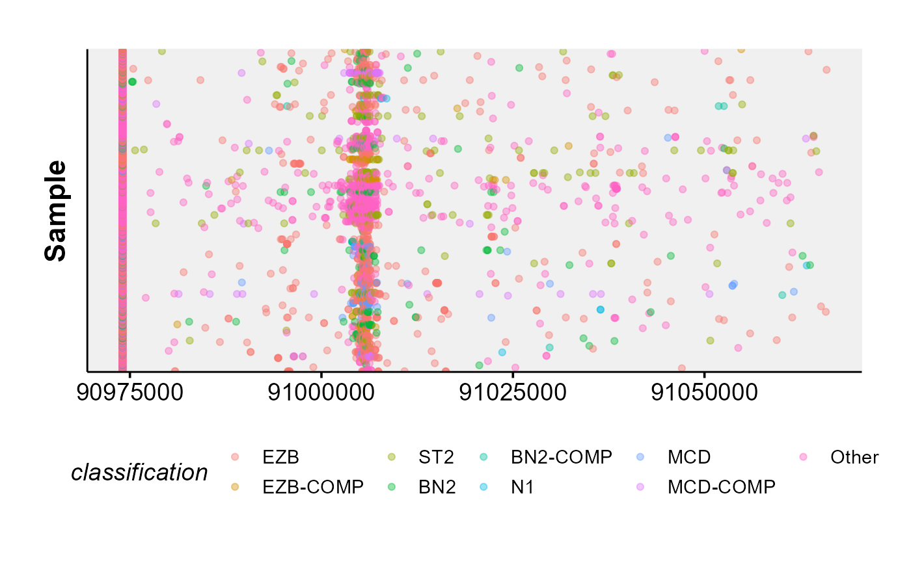

ashm_rainbow_plot.RdMake a rainbow plot of all mutations in a region, ordered and coloured by metadata.
ashm_rainbow_plot(
mutations_maf,
metadata,
exclude_classifications,
drop_unmutated = FALSE,
classification_column,
bed,
region,
custom_colours,
hide_ids = TRUE
)A data frame containing mutations (MAF format) within a region of interest (i.e. use the get_ssm_by_region).
should be a data frame with sample_id as a column.
Optional argument for excluding specific classifications from a metadeta file.
Boolean argument for removing unmutated sample ids in mutated cases.
The name of the metadata column to use for ordering and colouring samples.
Optional data frame specifying the regions to annotate (required columns: start, end, name).
Genomic region for plotting in bed format.
Provide named vector (or named list of vectors) containing custom annotation colours if you do not want to use standartized pallette.
Boolean argument, if TRUE, ids will be removed.
ggplot2 object
This function creates a rainbow plot for all mutations in a region. Region can either be specified with the region parameter,
or the user can provide a maf that has already been subset to the region(s) of interest with mutation_maf.
As a third alternative, the regions can also be specified as a bed file with bed.
Lastly, this function has a variety of parameters that can be used to further customize the returned plot in many different ways.
Refer to the parameter descriptions, examples as well as the vignettes for more demonstrations how this function can be called.
#basic usage
this_region = "chr6:90975034-91066134"
this_metadata = get_gambl_metadata()
ashm_rainbow_plot(metadata = this_metadata,
region = this_region)
